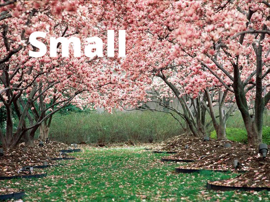

 군 당국은 북한 군인 귀순 사건을 계기로 판문점 공동경비구역(JSA)에서 '한국군 교전수칙'을 적용하는 방안을 적극 검토 중인 것으로 알려졌다. 군의 한 소식통은 15일 "유엔사가 판문점 공동경비구역의 작전지휘권을 행사하고 있지만, JSA의 경비 책임을 한국군이 맡고 있는 만큼 한국군의 교전수칙이 적용돼야 한다는 인식을 군 내부에서
공감하고 있다"고 밝혔다. 소식통은 "북한군이 경비를 맡은 한국군에게 위해를 가할 조짐이 있거나, 북한 측의 총격이 있을 경우 즉각 응사할 수 있도록 한국군 교전수칙을 탄력적으로 한국군 경비대대장에게 위임하는 방안을 유엔사와 협의할 것"이라고 전했다. 최전방지역에서 우리 군의 교전수칙은 유사시 현장 지휘관의 판단으로 선(先) 조치하고, 상황이 종료되면 상급부대에 후(後) 보고하는 방식이다. 북한의 도발 수준에 따라 그 3∼4배로 응징할 수
있는 등 '비례성 원칙'에 구애받지 않는다. 그러나 판문점 JSA는 유엔군사가 작전지휘권을 행사하는 곳으로, 대응 사격 등 무력사용은 유엔사의 승인에 따라야 한다.
JSA 내에서 대응 사격을 하려면 유엔사 교전수칙이 적용된다. 유엔사의 교전수칙은 확전 가능성과 위기관리 고조 등을 정확히 따져 비례성 원칙으로 대응해야 한다는 것이 기본 틀이다. 이는 한반도의 안정적인 상황 관리가 유엔사의 기본 임무이기 때문이다. 우리 군이 JSA에 한국군 교전수칙을 탄력적 적용하는 방안을 적극 검토하는 것은 지난 13일 북한 군인이 총격을 받으면서 JSA내 군사분계선(MDL)을 넘었는데도 대응사격 등의 조치를 하지 않았다는
지적 때문이다. 당시 북한 군인은 MDL 인근까지 타고 온 군용지프가 배수로 턱에 걸리자 차에서 내려 남쪽으로 뛰었고, 판문점 경비초소의 북한군 4명은 권총과 AK-47 소총으로 40여 발을 발사했다. 한편 군과 유엔사는 북한 군인 귀순 당시 촬영된 CC(폐쇄회로)TV 영상의 일부를 공개하는 방안을 협의 중인 것으로 알려졌다. JSA에 설치된 감시장비로 촬영된 영상이나 사진은 유엔군사령관(한미연합사령관 겸임)의 승인이 있어야 공개할 수 있다.